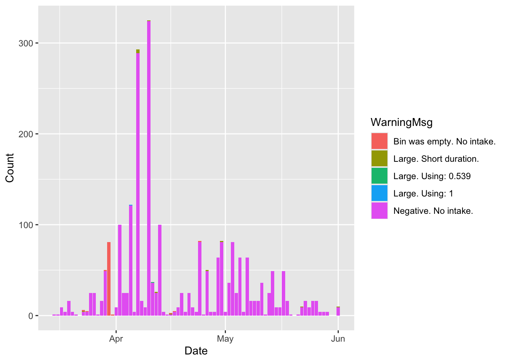
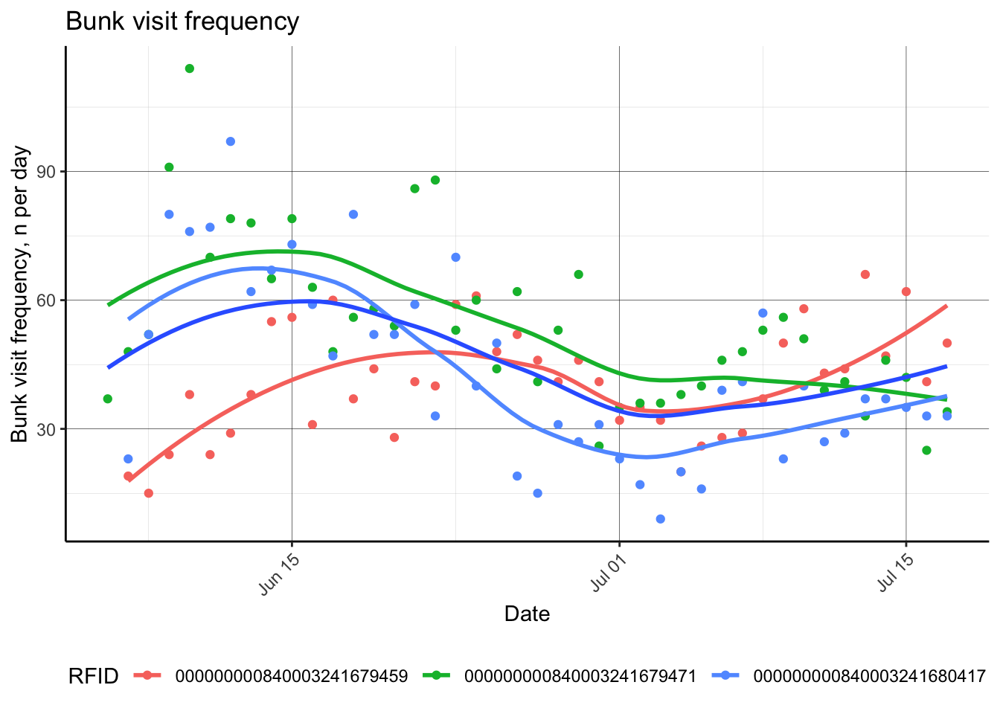
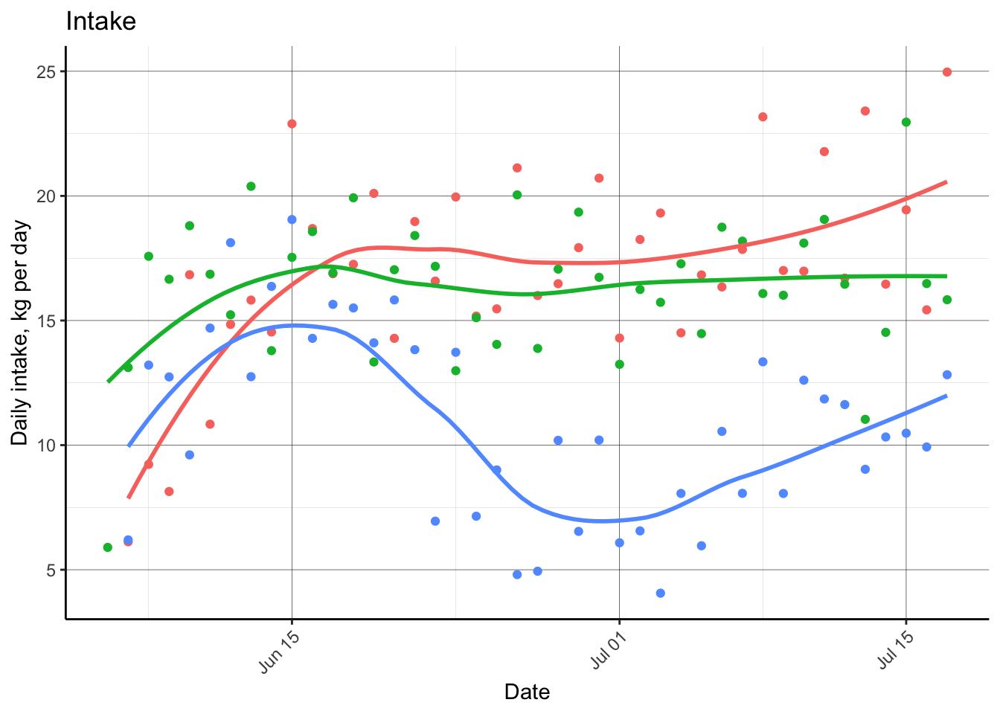
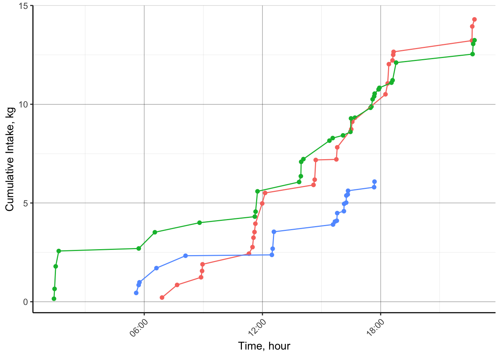

3 SmartFeeder API
Developed by Jameson Brennan, Ira Parsons, and Hector Menendez Department of Animal Science, South Dakota State University
The objectives of this hands on tutorial are to introduce workshop participants to methods for streamlining SmartFeeder data processing tasks in R.
3.1 API
3.1.1 Libraries
Our first step to processing the data is to import the libraries we will use to run our analysis. Each library contains a set of functions which can be used to process data. For example, the function mean() would sum the values in a column and divide by the number of observations in the column. This code will look to see if the necessary packages are installed on your computer and if not install and load them.
##if there is an error and a package or dependency needs to be updated un-comment the
#code below and replace 'rvest' with package
#remove.packages('rvest')
#install.packages('rvest')
#Needed packages
list.of.packages <- c("rvest",'httr','RCurl','tidyverse','data.table','lubridate',
'knitr','markdown','fasttime','MASS')
new.packages <- list.of.packages[!(list.of.packages %in%
installed.packages()[,"Package"])]
if(length(new.packages)) install.packages(new.packages)
library(rvest)
library(httr)
library(RCurl)
library(tidyverse)
library(data.table)
library(lubridate)
library(knitr)
library(rmarkdown)
library(fasttime)
library(MASS)3.1.2 Login credentials
Next, we need to create character variables specifying the login credentials for the application interface. In the quotations, enter your username and password.
3.1.3 Report paramters
The next step is to enter the parameters for our data query.In the quotations below you will need to change the FID (or SmartFeeder ID), and the start and end times for the data you want to download.
Two things to note are 1) you can enter multiple pieces of equipment assocated with an account and 2) the start time and end time must be in the same format. We have entered an end time since our data collection for this project is complete. However, you can change this parameter to current computer time to download the most recent dataset.
3.1.4 Data Download
This code chunk will pull the data from the cloud based on the specifications of what was provided above.
# Login ----
# First Authenticate to receive token:
req <- POST("https://portal.c-lockinc.com/api/login", body=list(user=USERNAME, pass=PASSWORD))
stop_for_status(req)
TOK <- trimws(content(req))
# Set up URL ----
url = paste0('https://portal.c-lockinc.com/api/',
'getintake?d=',intake.type, # Specify vists or daily average
'&fids=',equipIDs, # Specify feeder ids
'&st=',date.start, # Specify start date
'&et=',date.end # Specify end date
)
# Download data ----
req = POST(url,body = list(token=TOK))
stop_for_status(req)
# Parse data ----
ct = str_split(content(req, as = 'text'), '\\n')[[1]]
d.sfeed = data.table(do.call('rbind', str_split(ct[3:length(ct)],",")))
colnames(d.sfeed) = c(str_split(ct[2],',')[[1]])3.2 SmartFeeder Data Processing
This is the raw dataset downloaded from the SmartFeeder API.The code chunk will print the first five rows of data in table format.
| FeederID | RFID | StartTime | EndTime | Duration | StartMassKG | EndMassKG | IntakeKG | FeedTypeNum | WarningCode | WarningMsg | SSFTray |
|---|---|---|---|---|---|---|---|---|---|---|---|
| 10818 | 000000000840003252605896 | 2023-03-14 18:00:29 | 2023-03-14 18:02:42 | 133 | 121.708 | 121.222 | 0.486 | 1 | 0 | 0 | |
| 10818 | 000000000840003252605892 | 2023-03-14 18:08:33 | 2023-03-14 18:21:39 | 786 | 121.247 | 118.65 | 2.597 | 1 | 0 | 0 | |
| 10818 | 000000000840003252605896 | 2023-03-14 18:21:39 | 2023-03-14 18:28:08 | 389 | 118.65 | 118.199 | 0.45 | 1 | 0 | 0 | |
| 10818 | 2023-03-14 18:28:08 | 2023-03-14 18:58:44 | 1836 | 118.199 | 114.214 | 3.986 | 1 | 3 | Unallocated feed. | 0 | |
| 10818 | 000000000840003241679559 | 2023-03-14 18:58:44 | 2023-03-14 19:05:44 | 420 | 114.214 | 113.067 | 1.146 | 1 | 0 | 0 | |
| 10818 | 000000000840003241679617 | 2023-03-14 19:05:44 | 2023-03-14 19:09:48 | 244 | 113.067 | 111.937 | 1.131 | 1 | 0 | 0 |
We can see that the ‘SSFTray’ column is likely not necessary and can be removed. In addition, we will create a new column called ‘Date’ that converts the start time to a Date only value. Lastly we will convert the 14 digit RFID number to only the last 6 digits to simplify identifying unique animals.
3.3 SmartFeedert Data Visualization
One of the first steps to processing and cleaning data is to plot it. This code chunk will get the number of daily visits for each feeder and plot it by day.
The smartfeeder data has a column named ‘Valid’ that flags potentially bad data in the system based on quantiles. The following plots show the bad data labeled as Valid = No for the entire dataset and for an individual animal.
# Plot warnings
d.sfeed %>%
dplyr::filter(RFID=='000000000840003252605896' & WarningMsg != "") %>%
group_by(Date,WarningMsg) %>%
mutate(Count = n()) %>%
ggplot(aes(x=Date, y = Count, fill=WarningMsg))+
geom_col()
This next session shows a few examples of quickly calculating animal behavior to summarize daily animal visit behavior to quickly observe utilization rates. These plots are helpful to ensure equipment is functioning as expected, and that animals are using the equipment as desired.
# FeedingBehavior -----
d.fbdaily = d.sfeed[, .(BVfreq = .N,
BVdur.tot = sum(as.numeric(Duration), na.rm = T),
BVdur.u = mean(as.numeric(Duration), na.rm = T),
BVdur.sd = sd(as.numeric(Duration), na.rm = T),
IntakeKG.tot = sum(as.numeric(IntakeKG), na.rm = T),
ERkg.min = (sum(as.numeric(IntakeKG), na.rm = T)/(sum(as.numeric(Duration), na.rm = T)/60))),
by = list(RFID,Date)]
# Calculate cumulative intake
setorder(d.fbdaily, cols = 'RFID','Date')
d.fbdaily[, cumDMI := cumsum(IntakeKG.tot), by = 'RFID']Now, we have applied processing algorithms to calculate animal feeding behaviors, including feed intake. Next, we can quickly plot some of these behaviors.
p.bvfreq = d.fbdaily %>%
dplyr::filter(RFID %in% c('000000000840003241680417',
'000000000840003241679459',
'000000000840003241679471')) %>%
ggplot(aes(as.Date(Date), y = BVfreq))+
geom_point(aes(color = RFID))+
geom_smooth(aes(color = RFID), se = F)+
geom_smooth(se = F)+
labs(x = 'Date',
y = 'Bunk visit frequency, n per day',
title = 'Bunk visit frequency')+
theme_classic()+
theme(panel.grid.major = element_line(color = 'black', size = 0.1),
panel.grid.minor = element_line(color = 'grey', size = 0.05),
axis.text.x = element_text(angle = 45, hjust = 1),
plot.caption = element_text(hjust = 0),
legend.position = "bottom")## Warning: The `size` argument of `element_line()` is deprecated as of ggplot2 3.4.0.
## ℹ Please use the `linewidth` argument instead.
## This warning is displayed once every 8 hours.
## Call `lifecycle::last_lifecycle_warnings()` to see where this warning was generated.## `geom_smooth()` using method = 'loess' and formula = 'y ~ x'
## `geom_smooth()` using method = 'loess' and formula = 'y ~ x'
This next chunk of code will remove the observations that are not valid and replot the data.
#Remove not valid points
d.sfeed=subset(d.sfeed, WarningMsg == "")
# FeedingBehavior -----
d.fbdaily = d.sfeed[, .(BVfreq = .N,
BVdur.tot = sum(as.numeric(Duration), na.rm = T),
BVdur.u = mean(as.numeric(Duration), na.rm = T),
BVdur.sd = sd(as.numeric(Duration), na.rm = T),
IntakeKG.tot = sum(as.numeric(IntakeKG), na.rm = T),
ERkg.min = (sum(as.numeric(IntakeKG), na.rm = T)/(sum(as.numeric(Duration), na.rm = T)/60))),
by = list(RFID,Date)]
# Calculate cumulative intake
setorder(d.fbdaily, cols = 'RFID','Date')
d.fbdaily[, cumDMI := cumsum(IntakeKG.tot), by = 'RFID']
#plot animal weight by date
p.intakedaily = d.fbdaily %>%
dplyr::filter(RFID %in% c('000000000840003241680417',
'000000000840003241679459',
'000000000840003241679471')) %>%
ggplot(aes(x = as.Date(Date), y = IntakeKG.tot, color = RFID))+
geom_point()+
geom_smooth(se = F)+
labs(x = 'Date',
y = 'Daily intake, kg per day',
title = 'Intake')+
theme_classic()+
theme(panel.grid.major = element_line(color = 'black', size = 0.1),
panel.grid.minor = element_line(color = 'grey', size = 0.05),
axis.text.x = element_text(angle = 45, hjust = 1),
plot.caption = element_text(hjust = 0),
legend.position = "none")
p.intakedaily## `geom_smooth()` using method = 'loess' and formula = 'y ~ x'
## FeederID RFID StartTime EndTime
## <char> <char> <char> <char>
## 1: 10818 000000000840003252605896 2023-03-14 18:00:29 2023-03-14 18:02:42
## 2: 10818 000000000840003252605892 2023-03-14 18:08:33 2023-03-14 18:21:39
## 3: 10818 000000000840003252605896 2023-03-14 18:21:39 2023-03-14 18:28:08
## 4: 10818 000000000840003241679559 2023-03-14 18:58:44 2023-03-14 19:05:44
## 5: 10818 000000000840003241679617 2023-03-14 19:05:44 2023-03-14 19:09:48
## ---
## 132895: 10822 000000000840003241679458 2023-07-17 20:22:54 2023-07-17 20:26:41
## 132896: 10822 000000000840003241679454 2023-07-17 20:26:41 2023-07-17 20:29:55
## 132897: 10822 000000000840003241679450 2023-07-17 20:30:24 2023-07-17 20:34:13
## 132898: 10822 000000000840003241679452 2023-07-17 20:35:02 2023-07-17 20:44:16
## 132899:
## Duration StartMassKG EndMassKG IntakeKG FeedTypeNum WarningCode WarningMsg
## <char> <char> <char> <char> <char> <char> <char>
## 1: 133 121.708 121.222 0.486 1 0
## 2: 786 121.247 118.65 2.597 1 0
## 3: 389 118.65 118.199 0.45 1 0
## 4: 420 114.214 113.067 1.146 1 0
## 5: 244 113.067 111.937 1.131 1 0
## ---
## 132895: 227 30.739 30.31 0.429 1 0
## 132896: 194 30.31 29.8 0.51 1 0
## 132897: 229 29.8 29.177 0.623 1 0
## 132898: 554 29.223 29.101 0.123 1 0
## 132899:
## Date RFIDTag
## <Date> <char>
## 1: 2023-03-14 605896
## 2: 2023-03-14 605892
## 3: 2023-03-14 605896
## 4: 2023-03-14 679559
## 5: 2023-03-14 679617
## ---
## 132895: 2023-07-17 679458
## 132896: 2023-07-17 679454
## 132897: 2023-07-17 679450
## 132898: 2023-07-17 679452
## 132899: <NA>d.PrevDayFE = d.sfeed[Date == as.character('2023-07-01') & RFID %in% c('000000000840003241680417',
'000000000840003241679459',
'000000000840003241679471'),]
d.PrevDayFE[, DaySec := hour(StartTime)*3600 + minute(StartTime)*60 + second(StartTime)]
setorder(d.PrevDayFE,cols = 'RFID','DaySec')
d.PrevDayFE[, cumDMI := cumsum(IntakeKG), by = 'RFID']
p.CumIntakeDaily = d.PrevDayFE %>%
ggplot(aes(x = as.POSIXct(StartTime), y = cumDMI,color = RFID))+
geom_point()+
geom_line()+
scale_x_datetime(date_labels = "%H:%M")+
# facet_wrap(~RFID, scales = 'free')+
labs(x = 'Time, hour',
y = 'Cumulative Intake, kg')+
theme_classic()+
theme(panel.grid.major = element_line(color = 'black', size = 0.1),
panel.grid.minor = element_line(color = 'grey', size = 0.05),
axis.text.x = element_text(angle = 45, hjust = 1),
plot.caption = element_text(hjust = 0),
legend.position = "none")
p.CumIntakeDaily 